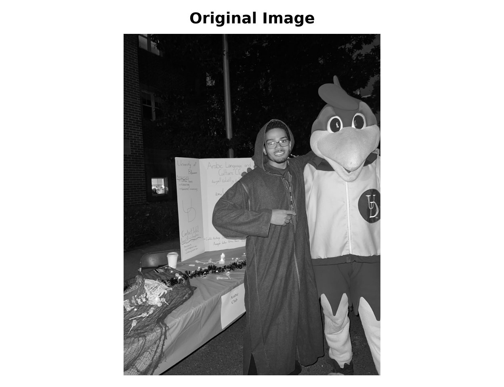
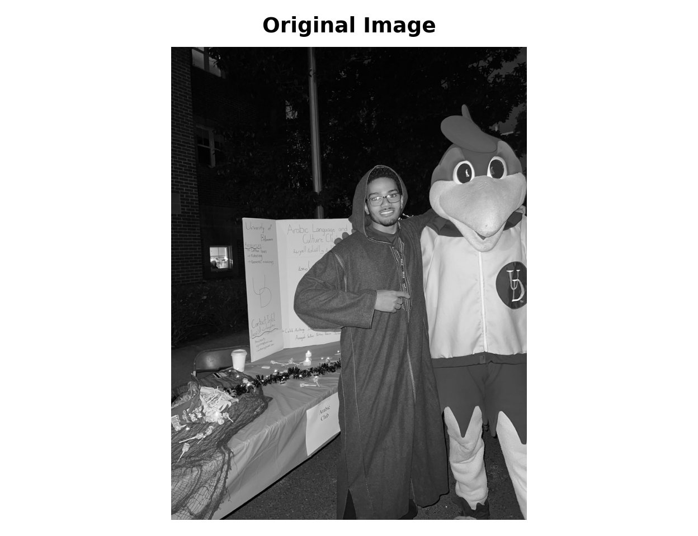
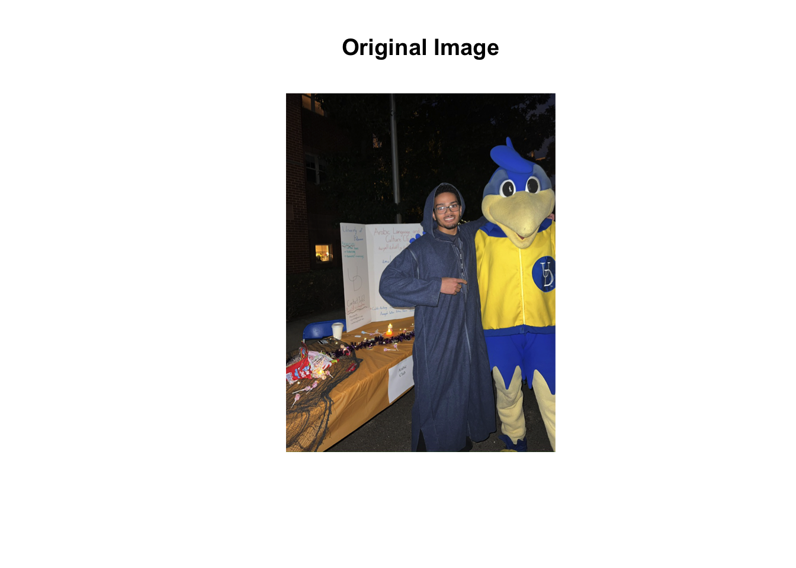
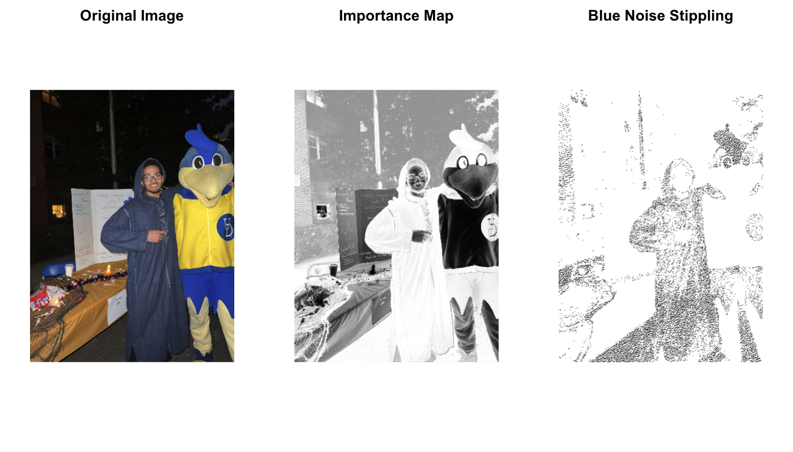
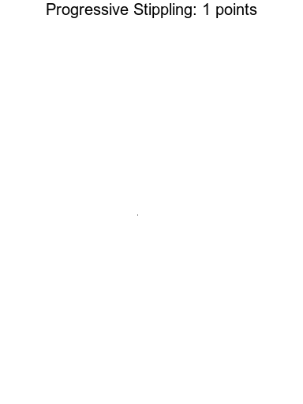
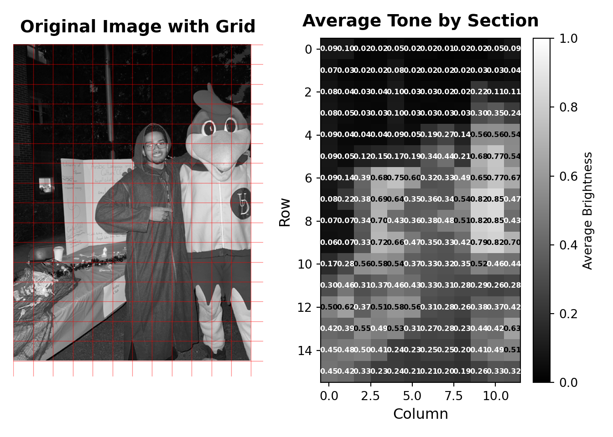
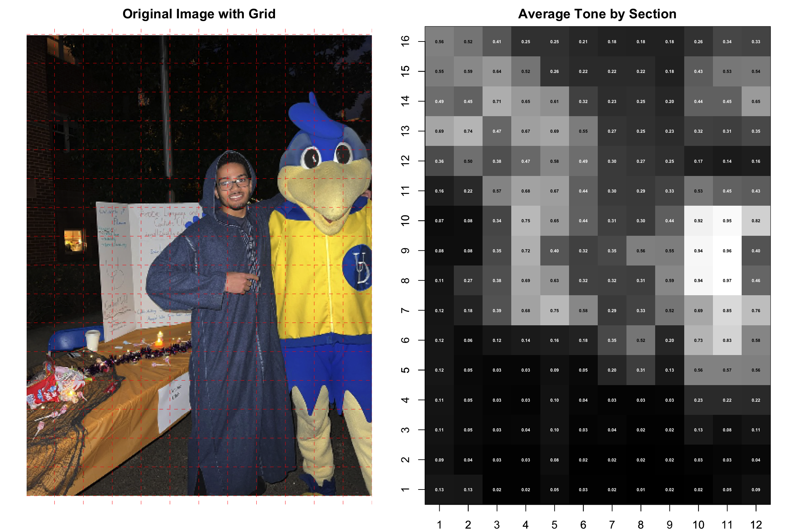
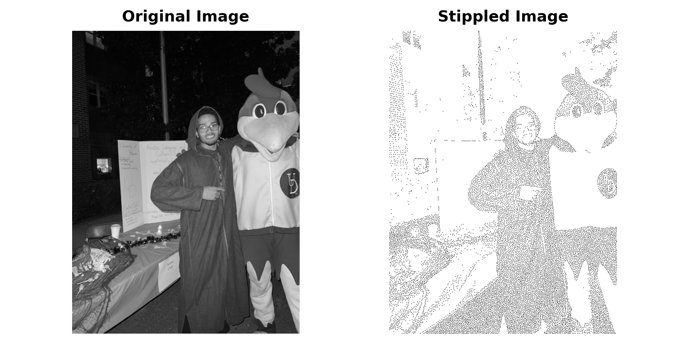
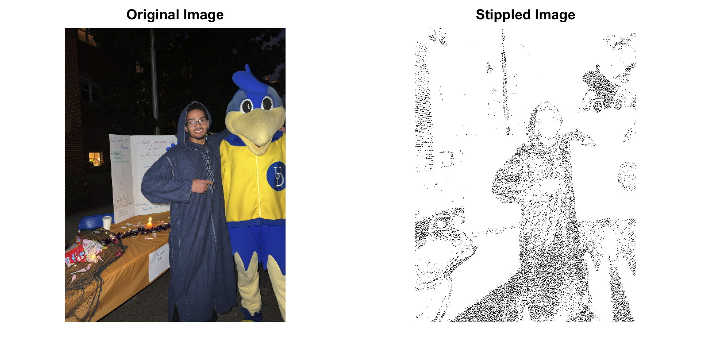

(np.float64(-0.5), np.float64(767.5), np.float64(1023.5), np.float64(-0.5))
Image shape: (1024, 768)Image size: 1024x768 pixelsTransforming Photographs into Aesthetic Dot Patterns
Core Question: How can we convert a photograph into an aesthetically pleasing pattern of dots that preserves the visual information of the original image?
The Challenge: Blue noise stippling is a technique that converts images into patterns of dots (stipples) using algorithms that balance visual accuracy with spatial distribution. This implementation uses a modified “void and cluster” algorithm that combines importance sampling with blue noise distribution properties to create stippling patterns that are both visually accurate and spatially well-distributed.
Our Approach: We use a modified void-and-cluster algorithm that: 1. Creates an importance map identifying visually important regions 2. Uses a toroidal (periodic) Gaussian kernel for repulsion to ensure blue noise properties 3. Iteratively selects points with minimum energy 4. Balances image content importance with blue noise spatial distribution
Blue noise stippling is a technique for converting images into a pattern of dots (stipples) that preserves the visual information of the original image while creating an aesthetically pleasing, evenly distributed pattern. This method follows the approach described by Bart Wronski.
The method uses a modified “void and cluster” algorithm that combines importance sampling with blue noise distribution properties to create stippling patterns that are both visually accurate and spatially well-distributed. This version uses smooth extreme downweighting that selectively downweights very dark and very light tones while preserving mid-tones, creating a more balanced distribution of stipples across the image.
We begin by loading the photograph that will be transformed into a blue noise stippling pattern.
(np.float64(-0.5), np.float64(767.5), np.float64(1023.5), np.float64(-0.5))
Image shape: (1024, 768)Image size: 1024x768 pixelsLoading required package: magrittr
Attaching package: 'imager'The following object is masked from 'package:magrittr':
addThe following objects are masked from 'package:stats':
convolve, spectrumThe following object is masked from 'package:graphics':
frameThe following object is masked from 'package:base':
save.image
Image dimensions: 768 x 1024 pixelsBefore applying the stippling algorithm, we create an importance map that identifies which regions of the image should receive more stipples. The importance map is computed by:
The compute_importance function is the primary mechanism for controlling dot distribution in the stippled image. Key parameters include:
extreme_threshold_low and extreme_threshold_high define what counts as “extreme” tonesextreme_downweight (0.0-1.0) controls reduction of stipples in very dark or very light areasmid_tone_boost and mid_tone_center emphasize particular brightness rangesextreme_sigma and mid_tone_sigma control the sharpness of transitionsThis function allows fine-tuning of the stippling pattern without modifying the core algorithm.
The stippling algorithm uses a modified void-and-cluster approach that:
Before generating the stippling pattern, we prepare the image by resizing if necessary and computing the importance map.
Resized image from (1024, 768) to (512, 384) for processingFinal image shape: (512, 384) (should be 2D for grayscale)Importance map computedResized image to 384 x 512 for processingFinal image shape: 512 x 384 Importance map computedNow let’s apply the stippling algorithm to create the blue noise stippling pattern.
Generating blue noise stippling pattern...Generated 15728 stipple pointsStipple pattern shape: (512, 384)Generating blue noise stippling pattern...Generated 15728 stipple pointsStipple pattern shape: 512 x 384 Let’s visualize the original image, the importance map, and the stippled version side by side for comparison.
(np.float64(-0.5), np.float64(383.5), np.float64(511.5), np.float64(-0.5))(np.float64(-0.5), np.float64(383.5), np.float64(511.5), np.float64(-0.5))(np.float64(-0.5), np.float64(383.5), np.float64(511.5), np.float64(-0.5))

This section creates a GIF showing how the stippled image looks as more points are added sequentially. We’ll use the already-computed stippling points to generate frames at increments of 100 points.
Using existing stippling with 15728 pointsImage shape: (512, 384)Generated 159 framesPoint counts: [1, 100, 200, 300, 400, 500, 600, 700, 800, 900, 1000, 1100, 1200, 1300, 1400, 1500, 1600, 1700, 1800, 1900, 2000, 2100, 2200, 2300, 2400, 2500, 2600, 2700, 2800, 2900, 3000, 3100, 3200, 3300, 3400, 3500, 3600, 3700, 3800, 3900, 4000, 4100, 4200, 4300, 4400, 4500, 4600, 4700, 4800, 4900, 5000, 5100, 5200, 5300, 5400, 5500, 5600, 5700, 5800, 5900, 6000, 6100, 6200, 6300, 6400, 6500, 6600, 6700, 6800, 6900, 7000, 7100, 7200, 7300, 7400, 7500, 7600, 7700, 7800, 7900, 8000, 8100, 8200, 8300, 8400, 8500, 8600, 8700, 8800, 8900, 9000, 9100, 9200, 9300, 9400, 9500, 9600, 9700, 9800, 9900, 10000, 10100, 10200, 10300, 10400, 10500, 10600, 10700, 10800, 10900, 11000, 11100, 11200, 11300, 11400, 11500, 11600, 11700, 11800, 11900, 12000, 12100, 12200, 12300, 12400, 12500, 12600, 12700, 12800, 12900, 13000, 13100, 13200, 13300, 13400, 13500, 13600, 13700, 13800, 13900, 14000, 14100, 14200, 14300, 14400, 14500, 14600, 14700, 14800, 14900, 15000, 15100, 15200, 15300, 15400, 15500, 15600, 15700, 15728]Using existing stippling with 15728 pointsImage shape: 512 x 384 Generated 159 framesPoint counts: 1, 100, 200, 300, 400, 500, 600, 700, 800, 900, 1000, 1100, 1200, 1300, 1400, 1500, 1600, 1700, 1800, 1900, 2000, 2100, 2200, 2300, 2400, 2500, 2600, 2700, 2800, 2900, 3000, 3100, 3200, 3300, 3400, 3500, 3600, 3700, 3800, 3900, 4000, 4100, 4200, 4300, 4400, 4500, 4600, 4700, 4800, 4900, 5000, 5100, 5200, 5300, 5400, 5500, 5600, 5700, 5800, 5900, 6000, 6100, 6200, 6300, 6400, 6500, 6600, 6700, 6800, 6900, 7000, 7100, 7200, 7300, 7400, 7500, 7600, 7700, 7800, 7900, 8000, 8100, 8200, 8300, 8400, 8500, 8600, 8700, 8800, 8900, 9000, 9100, 9200, 9300, 9400, 9500, 9600, 9700, 9800, 9900, 10000, 10100, 10200, 10300, 10400, 10500, 10600, 10700, 10800, 10900, 11000, 11100, 11200, 11300, 11400, 11500, 11600, 11700, 11800, 11900, 12000, 12100, 12200, 12300, 12400, 12500, 12600, 12700, 12800, 12900, 13000, 13100, 13200, 13300, 13400, 13500, 13600, 13700, 13800, 13900, 14000, 14100, 14200, 14300, 14400, 14500, 14600, 14700, 14800, 14900, 15000, 15100, 15200, 15300, 15400, 15500, 15600, 15700, 15728 Now let’s create the GIF animation:

To understand the distribution of tones across the image and identify the center of skin tone, we divide the image into a grid of small sections and compute the average brightness in each section.
(np.float64(-0.5), np.float64(383.5), np.float64(511.5), np.float64(-0.5))<matplotlib.colorbar.Colorbar object at 0x128a872d0>
Grid size: 16 rows × 12 columnsSection size: approximately 32 × 32 pixels
Average tone statistics: Overall mean: 0.308 Overall std: 0.224 Min: 0.015 Max: 0.853
Sections with tone close to skin tone (0.7 ± 0.1): Row 9, Col 11: 0.700
Row 8, Col 3: 0.701
Row 7, Col 3: 0.689
Row 5, Col 9: 0.683
Row 9, Col 3: 0.718
Row 6, Col 3: 0.679
Row 6, Col 11: 0.667
Row 9, Col 4: 0.658
Row 6, Col 4: 0.751
Row 6, Col 9: 0.646
Row 7, Col 4: 0.639
Row 6, Col 10: 0.769
Row 5, Col 10: 0.771
Row 13, Col 11: 0.626
Row 12, Col 1: 0.621
Row 9, Col 9: 0.794
Row 6, Col 5: 0.601
Full grid of average tones (row, col): ::: {.cell-output .cell-output-stdout}Col 0 Col 1 Col 2 Col 3 Col 4 Col 5 Col 6 Col 7 Col 8 Col 9 Col10 Col11 Row 0 0.092 0.096 0.023 0.024 0.050 0.025 0.025 0.015 0.018 0.019 0.049 0.093
Row 1 0.065 0.027 0.022 0.025 0.078 0.021 0.020 0.018 0.020 0.030 0.034 0.044
Row 2 0.078 0.040 0.030 0.035 0.098 0.027 0.032 0.024 0.023 0.216 0.110 0.107
Row 3 0.084 0.049 0.033 0.031 0.104 0.035 0.027 0.031 0.032 0.300 0.350 0.242
Row 4 0.090 0.038 0.035 0.037 0.093 0.047 0.193 0.267 0.139 0.557 0.563 0.536
Row 5 0.092 0.049 0.125 0.151 0.174 0.189 0.338 0.436 0.211 0.683 0.771 0.544
Row 6 0.088 0.144 0.393 0.679 0.751 0.601 0.317 0.333 0.494 0.646 0.769 0.667
Row 7 0.081 0.217 0.376 0.689 0.639 0.354 0.357 0.336 0.539 0.817 0.853 0.472
Row 8 0.068 0.074 0.345 0.701 0.429 0.356 0.380 0.485 0.506 0.817 0.847 0.430
Row 9 0.060 0.072 0.330 0.718 0.658 0.470 0.350 0.326 0.423 0.794 0.820 0.700
Row10 0.171 0.285 0.558 0.583 0.537 0.374 0.335 0.320 0.347 0.518 0.461 0.437
Row11 0.302 0.463 0.315 0.373 0.464 0.428 0.332 0.306 0.282 0.291 0.256 0.281
Row12 0.501 0.621 0.374 0.509 0.585 0.560 0.307 0.284 0.258 0.376 0.372 0.420
Row13 0.417 0.386 0.552 0.493 0.526 0.311 0.269 0.281 0.229 0.442 0.421 0.626
Row14 0.448 0.476 0.496 0.410 0.235 0.225 0.251 0.252 0.204 0.414 0.487 0.509
Row15 0.453 0.421 0.334 0.235 0.236 0.212 0.209 0.204 0.188 0.255 0.332 0.319 
Grid size: 16 rows × 12 columnsSection size: approximately 32 × 32 pixels
Average tone statistics: Overall mean: 0.324 Overall std: 0.253 Min: 0.015 Max: 0.967
Sections with tone close to skin tone (0.7 ± 0.1 ): Row 7 , Col 10 : 0.693
Row 8 , Col 4 : 0.693
Row 14 , Col 3 : 0.712
Row 13 , Col 1 : 0.687
Row 13 , Col 5 : 0.687
Row 9 , Col 4 : 0.720
Row 7 , Col 4 : 0.677
Row 11 , Col 4 : 0.676
Row 6 , Col 10 : 0.733
Row 13 , Col 4 : 0.666
Row 11 , Col 5 : 0.666
Row 13 , Col 2 : 0.735
Row 10 , Col 4 : 0.748
Row 7 , Col 5 : 0.749
Row 14 , Col 12 : 0.651
Row 10 , Col 5 : 0.649
Row 14 , Col 4 : 0.647
Row 15 , Col 3 : 0.643
Row 7 , Col 12 : 0.764
Row 8 , Col 5 : 0.632
Row 14 , Col 5 : 0.613
Full grid of average tones (row, col): ::: {.cell-output .cell-output-stdout}Col 1 Col 2 Col 3 Col 4 Col 5 Col 6 Col 7 Col 8 Col 9 Col10 Col11 Col12 Row 1 0.129 0.125 0.023 0.024 0.049 0.025 0.024 0.015 0.018 0.019 0.046 0.087
Row 2 0.094 0.039 0.026 0.025 0.078 0.021 0.020 0.018 0.020 0.028 0.034 0.044
Row 3 0.110 0.050 0.035 0.037 0.103 0.029 0.037 0.023 0.023 0.131 0.080 0.112
Row 4 0.115 0.049 0.031 0.030 0.104 0.038 0.027 0.029 0.031 0.225 0.224 0.219
Row 5 0.124 0.046 0.034 0.035 0.090 0.048 0.201 0.305 0.131 0.562 0.565 0.557
Row 6 0.125 0.062 0.123 0.144 0.160 0.184 0.351 0.521 0.203 0.733 0.832 0.579
Row 7 0.121 0.183 0.394 0.677 0.749 0.585 0.292 0.332 0.524 0.693 0.851 0.764
Row 8 0.115 0.274 0.383 0.693 0.632 0.323 0.320 0.310 0.587 0.937 0.967 0.463
Row 9 0.076 0.080 0.352 0.720 0.403 0.317 0.351 0.555 0.552 0.942 0.964 0.396
Row10 0.066 0.079 0.341 0.748 0.649 0.445 0.314 0.295 0.438 0.923 0.950 0.823
Row11 0.162 0.217 0.572 0.676 0.666 0.442 0.297 0.288 0.329 0.531 0.446 0.428
Row12 0.361 0.500 0.382 0.473 0.583 0.493 0.295 0.274 0.246 0.169 0.144 0.163
Row13 0.687 0.735 0.468 0.666 0.687 0.550 0.271 0.251 0.228 0.317 0.310 0.351
Row14 0.493 0.449 0.712 0.647 0.613 0.319 0.235 0.247 0.202 0.445 0.446 0.651
Row15 0.549 0.588 0.643 0.520 0.260 0.222 0.220 0.222 0.177 0.428 0.528 0.537
Row16 0.560 0.519 0.407 0.251 0.250 0.211 0.185 0.179 0.180 0.258 0.345 0.332 :::
:::
(np.float64(-0.5), np.float64(383.5), np.float64(511.5), np.float64(-0.5))(np.float64(-0.5), np.float64(383.5), np.float64(511.5), np.float64(-0.5))
